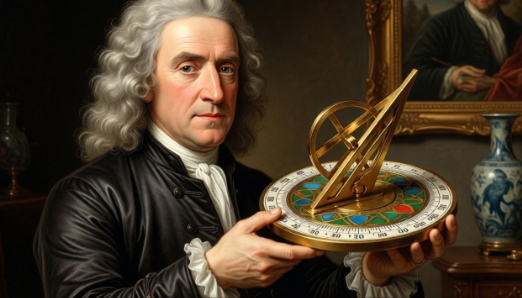
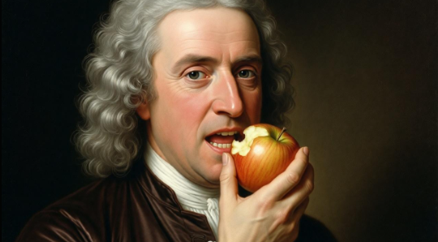
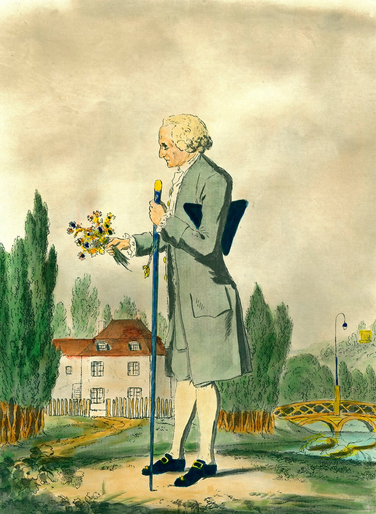

placeholder

napoleon_611

KazyFerenc_

Klcsey__

rousseau_123

nogravityhahaha67

45000

3

7

70
3
2
1662. augustus
Helló fiatalok, nézzétek az új napórám
Robert_Hooke: Na már te is fent vagy?
Edmond_Halley: Hogy megy a Principa?
nwtonh4ter: Olyan hülye vagy, hogy még az almák is rajtad nevetnek, amikor leesnek a fáról.
-> newtonhahaha67: Tudod kinek ugassál.

61
3
8
1805. május
Nekem nem az egyháztól származik a hatalmam.
vatican_official: Majd meglátjuk mit gondolsz erről a túlvilágon
LBerthier__: Nem kell megköszönni
1Sand0r: Úgy nézel ki mint egy jól lakott ovodás
-> napoleon_611: Te mondod dagi?

10
2
3
1762
Sokat dolgoztam ezen a művemen. Arról szól hogy az emberek alapvetően szabadnak születnek, a társadalom rontja el őket. Ezzel a művel szeretném a nevelés pontos leírását megírni.
Voltaire: Önnek sikerült az, ami eddig senkinek: négyszáz oldalon keresztül prédikálni az erényről, miközben saját gyermekeit a találtak kórházának küszöbén hagyta.
Montesquieu: Szépen írsz, de ez az egész egy nagy buborék. A valóságban Emilből nem szabad ember lenne, hanem egy életképtelen fura figura, aki azt se tudná, hogyan kérjen egy kávét.

81
3
14
1696. december
Sziasztok! Újra itt, remélem mindenkinek tetszik, akinek nem az nem kap ingyen almákat.
Robert_Hooke: Na már megint csak almákat zabálsz?
-> newtonhahaha67: Mint mindig te kis majom.
Edmond_Halley: Köszönöm a rózsát
nwtonh4ter: A gravitációt felfedezted, de néha úgy tűnik, a józan ész törvényei teljesen elkerülnek.

napoleon_611 újraközölte:
130
3
32
1812. Június
Hivatalosan is megindult a régóta várt orosz hadjárat. A Grande Armée soraia már teltházasak de egy szerencsés 1000 ember még bekerülhet a seregbe.
Jelentkezni DM-ekben lehet, a legkiválóbb katonák akár egy személyes válaszban is részesülhetnek, aláírásommal ellátva.
Még az ősz beköszönte előtt térdre kényszerítjük ellenségünket.
Isten Áldja Franciaországot.
vatican_official: "Isten áldja Franciaországot", nem is vagy hívő...
Franciaallampolgar74: Azta!
1Sand0r: Vége van, kicsi!

18
3
0
Jean_Auguste_Dominique_Ingres: Eddigi legjobb művem, nagyon drága egy ilyen jó vászon.
npleon_utalo13: Biztos, hogy csaltál a népszavazáson, pont úgy mint ahogyan a likebotolást is tetted.
C4rl0_Bonaparte: Büszke vagyok rád fiam!